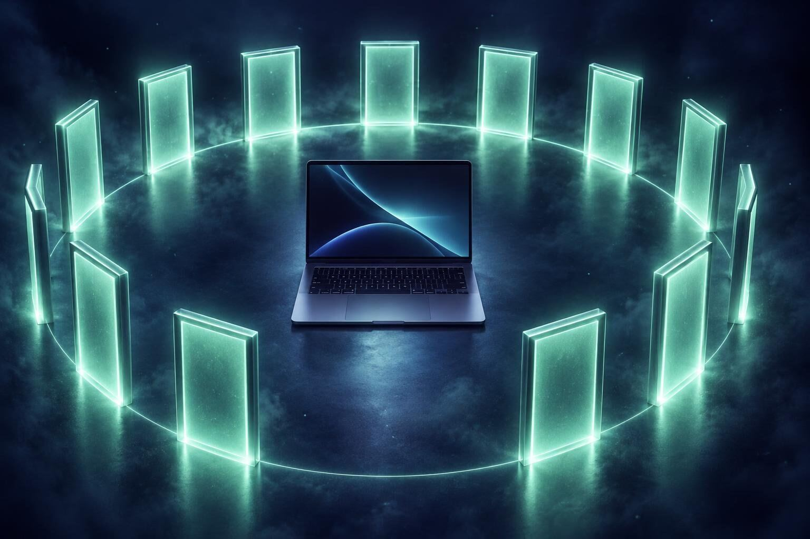

New version, updated Oct 27. Downloaded it before? Download it again and rerun it.
A quick security briefing for your Mac.
If you use AI agents on your Mac, this checks what they and your installs may have left exposed: startup items, browser extensions, permissions, remote access, stored keys and more. Then it tells you in plain English what it found. It only looks. It changes nothing unless you say yes.
Free and open source. Needs a Mac and Claude Code. By Stuart Kerr, ISO Vision.
Most Macs have no one watching.
Many Macs run with no antivirus and no anti-rootkit tool at all. Apple's built-in protections block known-bad downloads, and for years that was enough. Then we started talking to our computers.

Today: doors left open After a briefing and a few fixesAI agents now run commands, install tools, edit settings and read your files for you. Each agent, plugin or extension you test can leave something behind: a startup item, a stored key, a permission you forgot you gave.
Nothing on a stock Mac tells you when that adds up. The more you use AI on your Mac, the more doors there are to check.
Already built into your Mac
- Blocks known-bad downloads (Gatekeeper, XProtect)
- Expects apps to be signed and notarized
Nobody is checking
- Which startup items and extensions piled up
- What your AI tools were allowed to change
- Keys and tokens left in plain files
- Remote access you forgot was switched on
This is a briefing, not antivirus. It does not scan files for malware signatures. It audits how your Mac is set up, the places malware and risky agent setups live, and flags what looks out of place. It never changes anything without your yes.
Eleven places we look.
Pick one to see what Claude reads there, and why it matters. Everything is read-only.
Four steps. You stay in charge.
Remove a startup helper from an app you deleted
- What changes
- One helper file is moved to a quarantine folder. Nothing is deleted.
- Undo
- An undo step puts it back as it was.
This is a demo. It changes nothing on your computer.
Optional protection tools that keep an eye on things between check-ups. You choose what to turn on.
Built for people who test new AI tools.
If you try agents, plugins and servers often, your Mac collects more than you remember. These are the doors agents tend to open.
Tool servers that run commands
MCP servers can act on your Mac. The sweep lists every one and what it can reach.
Hooks that fire on their own
A changed Claude Code hook can run a command every time an agent starts.
Skills and plugins from strangers
Installed once, trusted forever. We list them so you can decide again.
Keys in files an agent can read
Tokens in .env files and shell history. We show names and mask the values.
Extensions bridged to apps
Browser extensions that talk to programs on your Mac, including sideloaded ones.
Permissions you clicked through
Screen recording, input monitoring, full disk access. Granted in a hurry, kept forever.
Safe to run, and easy to check.
You should not take our word for it. Here is what it promises, and how to verify each promise yourself in a minute.
- The scan is read-only.Nothing on your Mac is changed while it looks around, apart from the results folder it writes.
- The scripts send none of your data anywhere.Two checks ask Apple for update and app-approval status. The report is saved on your Mac and shared with Claude in your session, like any file you show it.
- Secrets are masked.The scripts hide passwords, tokens and keys in what they collect, and list credential files by name.
- Fixes wait for your yes.Cleanup happens after the full scan, one item at a time, and each fix comes with an undo step.
- Open source.Three readable shell scripts and plain-text instructions. Read every line before you run it.
Check it yourself
Run these in Terminal after the Claude prompt has unpacked the kit. First type cd ~. They check the kit in your home folder, and the zip in Downloads.
What it can't do
A clean report is a good sign, not a guarantee. It reads what standard macOS tools can see, so it can miss a threat built to hide from them. It is not a replacement for keeping macOS updated, using strong passwords and two-factor sign-in, or for a dedicated security product if you need one.
Find out what your Mac is exposing.
Free. You need a Mac and Claude Code. Nothing changes unless you approve it.
Zip, 50 KB. Download not starting? Get it from GitHub, or browse the source.
- Get Claude Code if you do not have itOpen Terminal (press Command and Space, type Terminal, press Return) and paste this line. Then run claude and sign in.
- Download the kitIt lands in your Downloads folder. If Safari unzips it for you, that is fine; Claude finds either.
- Paste this into Claude CodeClaude unpacks the kit, runs the sweep, and walks you through the report.
- Read your briefingFix what you want, skip what you don't, and keep the report for next time.